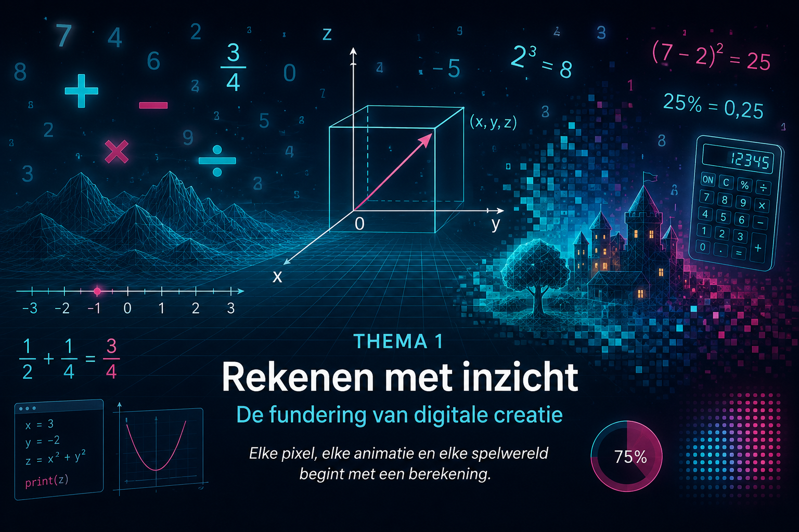

Overzicht van de hoofdstukken
Waarom beginnen we bij rekenen?
Wanneer je een game speelt, zie je een personage lopen, springen en draaien. Je ziet voorwerpen bewegen, van grootte veranderen of plots verdwijnen. Alles lijkt vanzelf te gebeuren.
Voor een computer bestaat zo’n digitale wereld echter niet uit personages, gebouwen, bomen of voertuigen. Een computer verwerkt vooral getallen en berekeningen.
De positie van een object wordt beschreven met coördinaten. De snelheid van een personage wordt vastgelegd met een getal. De grootte van een afbeelding of een driedimensionaal model wordt aangepast met een schaalfactor. Zelfs de kleur van één pixel wordt beschreven met verschillende getalwaarden.
Rekenen is daarom veel meer dan het uitvoeren van oefeningen op papier. Het is een basisvaardigheid waarmee je digitale werelden leert begrijpen, beschrijven en opbouwen.
In dit thema leg je de fundering voor de rest van de cursus. Veel fouten bij algebra, functies, meetkunde en vectoren ontstaan niet omdat die onderwerpen onbegrijpelijk zijn, maar omdat noodzakelijke basisbewerkingen nog onvoldoende beheerst worden.
Daarom werken we stap voor stap aan:
Een stevige rekenbasis zorgt ervoor dat je later meer aandacht kunt besteden aan het oplossen van problemen, het interpreteren van grafieken en het bouwen van digitale toepassingen.
De vaardigheden uit dit thema keren in bijna alle volgende onderdelen terug.
| Bij algebra |
reken je met letters, formules en onbekenden. |
| Bij functies |
bereken je functiewaarden en onderzoek je verbanden. |
| Bij meetkunde |
bereken je lengtes, hoeken, oppervlakten en afstanden. |
| Bij vectoren | reken je met componenten, richtingen en groottes. |
| Bij programmeren |
geef je de computer correcte bewerkingen en formules. |
| Bij digitale creatie |
werk je met posities, snelheden, kleuren, tijd en schaal. |